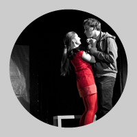

Dr. Jekyll a Mr. Hyde
hororová komedie, 90 minut bez pøestávky, hraje CO?!
Klasický pøíbìh boje dobra a zla podaný tak, jak ho neznáte. Kde se v èlovìku bere jeho temná stránka? A kdy definitivnì ovládne naše duše? A mùžeme se vùbec tomu všemu smát? Pøíbìh o vážných vìcech v témìø groteskním podání — pøijïte a pøesvìdèete se.
Text: Dle R. L. Stevensona Pavel a Zdenìk Jecelínovi
Režie: Martin Vokoun
Výprava: Jakub Baran, Lucie Wildtová
Realizace výpravy: CO?!
Svìtla / zvuk: Matìj Komárek / Lucie Valenová

Osoby a obsazení
Dr. Henry Jekyll: Tomáš Horáèek
Mr. Edward Hyde: Marek Šmidrkal
Daniela: Denisa Dlouhá
Robert: Martin Vokoun / Jakub Baran
Andrea: Ivana Vránková
Lennon: Martin Tafat / Ondøej Wald
Wolf: Jan Tichý
Jerry: Ondøej Lidický
Suzanne: Kristýna Tomšù / Eliška Holzknechtová
Kovboj: Michael Eniczky
Julie Corneová: Marta Procházková / Lucie Wildtová
Amanda Corneová: Tereza Konrádová
Veronika: Marta Procházková / Lucie Wildtová
Buck: Jan Tichý
Chuck: Ondøej Lidický
Kluk: Michael Eniczky
Holka: Tereza Konrádová
Prodavaèka: Kristýna Tomšù / Eliška Holzknechtová
Premiéry: 21. a 22. èervna 2011 v Divadle Radar